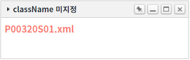
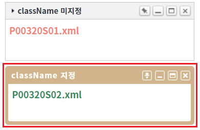

WidgetContainer의 함수 'addWidgets'로 위젯을 추가할 때, 위젯의 CSS class를 지정하는 예제입니다. 함수 'addWidgets'의 첫 번째 인자의 위젯 옵션 'className'을 사용하여 구현할 수 있습니다.
위젯 추가 시 CSS class 적용하기
STEP 1. 초기 상태를 확인합니다.
WidgetContainer에 위젯 옵션 'className'이 지정되지 않은 위젯이 추가되어있습니다. 이 위젯은 별도의 class가 적용되지 않은 기본 형태입니다.
그림 1.브라우저(Chrome) 실행 예시

STEP 2. CSS class를 적용하여 위젯 추가하기
버튼 위젯 추가하기 - 옵션 'className'을 'P00320_wg2'로 지정을 클릭합니다.STEP 3. 실행된 결과를 확인합니다.
위젯의 타이틀이 'className 지정'인 위젯이 추가됩니다. 기본 형식의 위젯과 타이틀 영역의 타이틀 글자색, 버튼 이미지, 위젯의 테두리 등 스타일이 다르게 적용된 것을 확인할 수 있습니다.
그림 2.브라우저(Chrome) 실행 예시

STEP 1. CSS class 정의하기
css 파일에 아래의 예시를 참고하여 class를 정의합니다.
/* 예제에 적용한 class의 내부 속성이 많아 class명만 나열하였습니다. */ /* 세부 속성은 '[프로젝트]/css/example.css'에서 확인할 수 있습니다. */ /* 위젯 최상위 div */ .P00320_wg2.w2widget{ } /* 위젯의 상단 타이틀 영역 */ .P00320_wg2.w2widget .w2widget_title{ } /* 위젯의 상단 타이틀 영역의 좌측 아이콘 */ .P00320_wg2.w2widget .w2widget_title .w2widget_icon{ } /* 위젯의 상단 타이틀 영역의 좌측 타이틀 문자열 */ .P00320_wg2.w2widget .w2widget_title .w2widget_title_text{ } /* 위젯의 상단 타이틀 영역의 우측 버튼 영역 */ .P00320_wg2.w2widget .w2widget_title .w2widget_title_buttons{ } .P00320_wg2.w2widget .w2widget_title .w2widget_title_buttons > div{ } /* 위젯의 상단 타이틀 영역의 우측 버튼 [고정] */ .P00320_wg2.w2widget .w2widget_title .w2widget_title_buttons > .w2widget_btnFix{ } /* 위젯의 상단 타이틀 영역의 우측 버튼 [최소] */ .P00320_wg2.w2widget .w2widget_title .w2widget_title_buttons > .w2widget_btnMinimize{ } /* 위젯의 상단 타이틀 영역의 우측 버튼 [최대] */ .P00320_wg2.w2widget .w2widget_title .w2widget_title_buttons > .w2widget_btnMaximize{ } /* 위젯의 상단 타이틀 영역의 우측 버튼 [닫기] */ .P00320_wg2.w2widget .w2widget_title .w2widget_title_buttons > .w2widget_btnClose{ } /* 위젯의 콘텐츠 영역 */ .P00320_wg2.w2widget .w2widget_content{ } /* 위젯의 상단 타이틀 영역의 우측 버튼 [고정]이 활성화된 경우 */ .P00320_wg2.w2widget.w2widget_fixed .w2widget_title .w2widget_title_buttons > .w2widget_btnFix{ } .P00320_wg2.w2widget.w2widget_fixed .w2widget_title{ }
STEP 2. CSS class 적용하여 위젯 추가하기
WidgetContainer의 함수 'addWidgets'를 이용하여 스크립트를 작성합니다. 함수 'addWidgets'의 첫 번째 인자에 위젯 정보가 담긴 JSON을 정의합니다. 첫 번째 인자 위젯 옵션의 'className'에 class명을 지정합니다. 세부 지정은 아래의 스크립트 예시에 작성되어 있습니다.
스크립트
// 위젯 'wg_exam2' 생성 옵션 정보 let widgetOptions = {}; // [필수] 위젯의 CSS class를 'P00320_wg2'로 지정 - 정의한 class는 '[프로젝트]/css/example.css'에서 확인할 수 있습니다. widgetOptions.className = "P00320_wg2"; // [필수] 위젯 ID. 동일한 ID를 가진 위젯이 있으면 추가되지 않습니다. widgetOptions.id = "wg_exam2"; // [필수] 위젯 파일 경로 widgetOptions.src = "/page/P00320S02.xml"; // [필수] scope 적용 여부로 true 고정 widgetOptions.scope = true; // [필수] 위젯 너비 : (설정 값 / WidgetContainer의 속성 'col'의 설정 값 * 100)으로 '%'단위로 그려집니다. widgetOptions.unitWidth = 1; // [필수] 위젯 높이 : (설정 값 * WidgetContainer의 속성 'unitHeightPixel'의 설정 값)으로 'px'단위로 그려집니다. widgetOptions.unitHeight = 5; // [권장] 위젯 타이틀 widgetOptions.title = "className 지정"; // 위젯의 x 위치 widgetOptions.x = 0; // 위젯의 y 위치 widgetOptions.y = 6; // WidgetContainer 'wgc_exam1'에 위젯 1개를 추가합니다. wgc_exam1.addWidgets(widgetOptions);
addWidgets( option )
option.className
[웹스퀘어5 SP5 개발 가이드] WidgetContainer
링크 : https://docs1.inswave.com/sp5_user_guide/2059d4ce88b2fc16#6f01c6c535be09d8